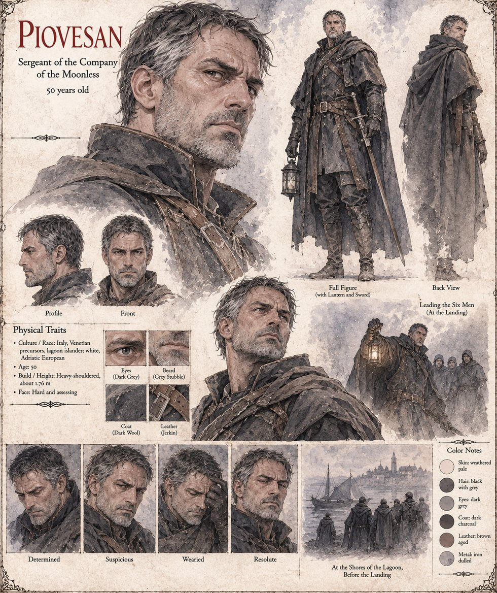

Piovesan
Sergeant of the Company of the Moonless · leader of the six at the landing · no age in the manuscript, 50 on his sheet
A stout, dry, thick-necked sergeant of the Company of the Moonless with a daughter in the glass-quarter and a bad knee, who has spent thirty years assessing what a place will cost. Captain Corbelli sends six men to Focolare’s own landing, with Piovesan at their head, to see whether the grain is worth requisitioning. He leads them up the bank to the fence with the air of a man walking into a church in which he has been told there is a quarrel. His six stop in a loose half-circle, each a pace from the next; when the young glassblower Tita lifts his palm to the nearest light as to the Sun, Piovesan strikes the arm down, not unkindly, since he has seen a good many boys killed for lifting a hand. Looking at the forty unarmed Listeners he sees not a congregation but a position. At the end of the row sits a tall grey foreigner of sixty-odd who bowed with his hands at his thighs and not at his belt, and Piovesan knows the type; before he can put a question the man has turned north and sat down again, with a flat gentle finality.
At the first star a man’s voice comes up out of the hollow in the thick sweet dialect of the salt islands, Marisa? I have come. It stops after thirteen seconds in the middle of a breath. The Listeners say Menego together; then, from the Company’s half-circle and not from the row, a voice that does not seem to its owner to be his own says it once more, singly. It is Piovesan, who heard forty voices say it and thought it wanted a forty-first. He asks the cantor who the man was, is told a cistern-keeper from Merlara who sat three evenings at the end of the third row to hear his dead wife, and is shown a fresh mound with a stone set that day: a man; a name; a hole. Take us back, he tells the ferry-master. To the foreigner he says that this is not a place for a man who can fight, and is answered I am counting, the only reply he cannot argue with.
In the skiff the corporal coughs, the glassblower looks at the water, and nobody speaks for the better part of an hour. At the ford the sergeant says, in the voice of a man making a report to himself, that it is a position, but not a defensible one, and that the Captain will want to hear that it has no grain. The manuscript does not follow him further.
The manuscript gives his build as stout and thick-necked, his dry manner, the daughter, the bad knee and his years of assessing places; it gives no age, height or colouring. The sheet’s age of 50, heavy-shouldered build of about 1.76 m, hard assessing face, grey-streaked hair, grey stubble, dark grey eyes, dark wool coat with brown leather straps, lantern and sword are its own, as are its panels Determined, Suspicious, Wearied and Resolute and its view Leading the Six Men (At the Landing). Its scene At the Shores of the Lagoon, Before the Landing puts six men on a lagoon shore before a sailing boat and a walled town; in the manuscript they arrive by a four-oared skiff up the river. The title (Sergeant of the Company of the Moonless) follows the manuscript.
“it was a position, but not a defensible one”